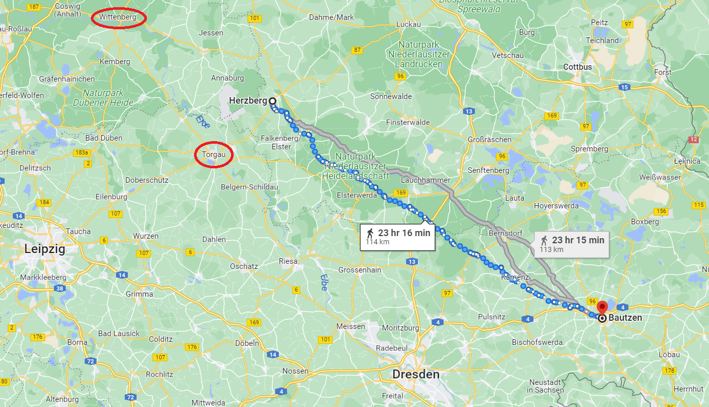
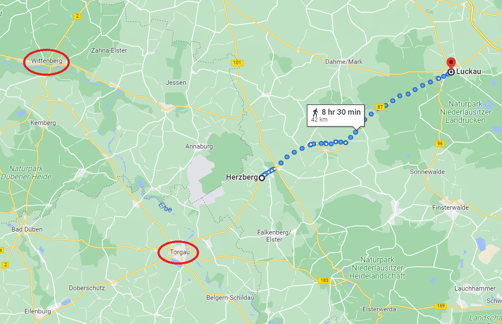
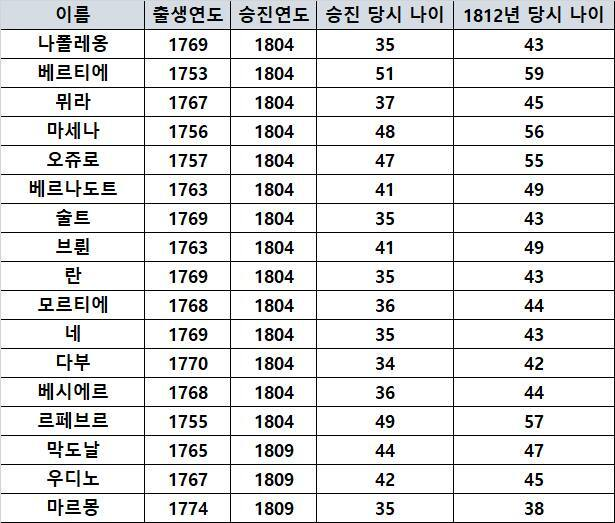
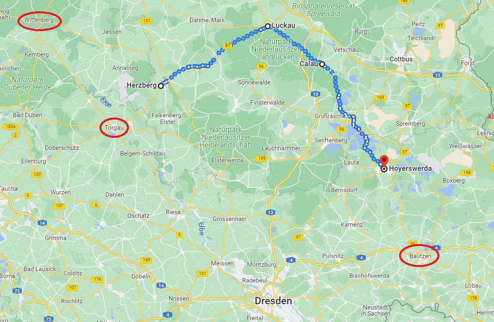

바우첸을 향하여 (12) - 큰 일은 작은 실수에서
게시: 2023-02-27T08:06:29+09:00
현대화된 전쟁일 수록 기술의 차이가 승패를 결정짓는다고 하지만 전쟁이란 많은 수가 적은 수를 이기는 게임이고, 바로 그 점 때문에 고대 그리스에서나 현대전에 있어서나 병법의 기초는 적은 분산시키고 아군은 집결시키는 것입니다. 나폴레옹이 유럽 전장을 휩쓴 이유도 바로 그것을 잘했기 때문이었습니다. 그런데, 1813년 5월, 바우첸 전투를 앞둔 나폴레옹은 전체 병력의 1/3 정도를 뚝 떼어 네에게 베를린 방향으로 끌고 가도록 하여 스스로를 분산시켰습니다. 그에 비해 연합군은 바우첸에 집결했습니다. 대체 나폴레옹은 왜 이런 악수를 둔 것일까요? 나폴레옹이 네의 군단들을 베를린 쪽으로 향하게 한 것은 연합군의 1/3 정도를 차지하는 프로이센군의 이탈을 유도하기 위한 것이었습니다. 그러나 프로이센은 나폴레옹의 덫에 넘어가지 않았고 러시아군과 어깨를 나란히 하여 바우첸으로 집결했습니다. 전쟁에서 가장 중요한 것은 천지인(天地人), 즉 시간과 공간과 병력이었습니다. 나폴레옹의 병력이 연합군보다 더 많다고 해도, 당장 네의 군단들이 저 멀리 북서쪽에 있다면 전투에는 아무 도움이 되지 않았습니다. 그리고 바우첸 앞에서 연합군과 대치 중인 막도날-베르트랑-마르몽의 군단들은 언제든 연합군의 공격을 받을 수 있는 취약한 상태에 있었습니다. 연합군 지휘부의 혼선으로 다행히 아직까지는 공격을 받고 있지 않았지만, 천지인 중에서 시간과 공간은 나폴레옹의 편이 아니었고, 이는 100% 나폴레옹 스스로가 만든 패착이었습니다. 네의 방향 전환은 정말 신속하게 이루어져야 했습니다. 프로이센군이 베를린이 아니라 바우첸으로 갔다는 것을 나폴레옹이 확인한 것은 5월 14일 새벽이었습니다. 그러나 나폴레옹은 웬일인지 당장 네에게 방향 전환 명령서를 날리지 않았습니다. 그는 여전히 프로이센군을 유인해 내는 것에 미련을 가지고 있었고, 베를린을 점령하는 것이 전략적으로 가치가 있는 일이라고 생각했기 때문이었습니다. 아무 별도 명령을 받지 못한 네 휘하의 제3, 제7 군단이 헤르츠베르크(Herzberg), 제5 군단이 도버루크(Doberlug), 제2 군단이 비텐베르크(Wittenbeg)에 도착한 5월 15일 밤, 나폴레옹은 마침내 네에게 방향 전환 명령서를 날리도록 베르티에에게 지시했습니다. 그런데 그 내용이 참으로 어정쩡한 것이었습니다. 빅토르(제2 군단), 레이니에(제7 군단), 세바스티아니(제2 예비기병군단), 즉 총 4만의 병력은 그대로 베를린으로 향하고 네(제3 군단)와 로리스통(제5 군단), 총 6만 정도는 바우첸으로 오라는 것이었습니다. 나폴레옹이 생각한 것은 자신의 병력이 정면에서 연합군을 밀어붙이는 동안, 네가 연합군의 우익 뒤로 돌아 퇴로를 차단하는 것이었습니다.

(헤르츠베르크에서 바우첸까지는 곧장 가도 110km가 넘는 거리로서, 정상적인 행군이라면 4~5일의 행군거리입니다.) 양측이 총력을 다해 결전을 벌일 때는 불과 1만의 예비병력이 큰 차이를 만들 수도 있는 법인데, 왜 나폴레옹은 그렇게 병력을 분산시키는 명령을 내렸을까요? 역시 나폴레옹도 사람인지라 원래 계획이 이미 틀어졌다는 현실을 인정하지 않고 자신이 세웠던 큰 그림에 미련이 남아서라고 밖에 설명이 되지 않습니다. 나폴레옹은 빅토르의 4만 병력으로 베를린을 함락시키고 그 앞을 막고 있던 뷜로를 추격하여 오데르 강을 건너되, 함부르크에서 동진할 다부와도 합류하여 슈테틴(Stettin), 퀘스트린(Küstrin), 글로가우(Glogau) 등의 요새의 포위를 풀거나 다시 점령하여 연합군의 퇴로를 차단한다는 큰 그림을 마음속에 그리고 있었습니다. 이건 나폴레옹이 두 수 세 수 앞을 너무 멀리 보느라 당장 눈앞의 적을 가볍게 보는 것이었습니다. 차라리 병력을 집중하여 바우첸에 집결한 연합군을 완전히 섬멸한다면 베를린은 물론 오데르 강변의 요새들은 저절로 그의 것이 될 수 있었습니다. 하지만 나폴레옹의 그런 전략적 판단보다 베르티에의 작은 실수가 더 큰 차이를 만들었습니다. 이 중요 명령서를 소지한 파발마는 15일 밤 11시에 드레스덴을 출발했으나, 16일 저녁까지도 네는 아무 명령서를 받지 못했습니다. 16일 하루 동안 네의 제3 군단이 나폴레옹의 기존 명령에 따라 부지런히 행군을 계속하여 헤르츠베르크 북동쪽의 루카우(Luckau)로 이동했기 때문이었습니다. 이건 베르티에의 실수였습니다. 막도날에게 하루에도 몇 번씩 상황 보고서를 올리라고 닦달해대던 베르티에 본인이, 자신이 내린 명령에 따라 이동한 네의 군단 위치를 잘못 파악하고 있었던 것입니다. 뿐만 아니었습니다. 네는 16일 밤 이렇게 뒤늦게나마 베르티에가 쓴 나폴레옹의 명령서를 받아보았는데, 거기에는 정말 무성의하고도 짧은 내용만 적혀 있었습니다. "스프레(Spree) 강에 면한 슈프렘베르크(Spremberg)로 행군하라. 적군이 바우첸에 집결하고 있는 것으로 보인다."

(네의 군단은 5월 16일 하루 동안 루카우까지 40km 넘게 행군한 셈인데, 이건 굉장한 강행군이었습니다. 네는 정말 최선을 다하고 있었습니다.) 베르티에는 도버루크에 있는 로리스통에게도 동일한 내용의 편지를 보냈습니다만, 그건 정말 복사본에 불과했을 뿐, 네에게 '로리스통에게도 동일한 명령서를 보냈다'라는 설명은 전혀 없었습니다. 확인되지 않은 이야기에 따르면 나폴레옹은 45세 이상 나이를 먹은 늙은 장군은 중용하지 않았다고 했습니다만, 당시 베르티에는 60세의 나이였습니다. 사람에 따라 다르겠습니다만 60세의 나이면 이미 체력은 물론 기억력이나 판단력이 젊은 시절과는 차이가 많이 날 나이이긴 하고, 특히 엄청난 서류 작업으로 인해 피로와 스트레스, 심적 부담이 집중되는 야전군 참모장이라면 더욱 그랬을 것 같습니다.

(무력으로 쌓아 올린 나폴레옹의 제국의 흥망성쇠도 결국 그 주요 지휘관들의 연령대에 의존한 결과가 되었습니다. 나폴레옹 본인을 포함하여 그의 부하들이 리즈 시절일 때 나이가 어땠는지를 보면, 확실히 다들 공훈을 세운 것은 30대였고, 그들이 그대로 늙어서 40대 후반이 되자 러시아에서 삽질한 뒤 망했지요. 기업이건 국가이건 모든 집단은 결국 사람들로 이루어진 것이고, 그 주요 멤버들의 나이가 기업이나 국가의 성격과 역량을 크게 좌우한다고 저는 믿습니다.) 이 무성의한 명령서를 받아본 네는 한참을 고민해야 했습니다. 이게 대체 자신의 제3 군단만 소환하는 것인지 아니면 자신의 지휘권 하에 있는 군단들 전체를 소환하는 것인지 불분명했기 때문이었습니다. 상황 설명이 부족하다 보니 판단은 더욱 어려웠습니다. 망망대해에 홀로 떠있는 군함의 함장은 언제나 외로운 법인데, 당시 네의 상황도 그랬습니다. 그는 이번 작전에서 전군의 1/3을 이끌고 있는 자신의 중요성을 잘 알고 있었는데, 이렇게 짧은 명령서만 가지고 전체 전쟁의 향방을 가를 수 있는 판단을 당장 내려야 하니 심적 부담이 매우 컸을 것입니다. 그는 자신의 참모장과 상의를 했고, 그 결과로 나폴레옹의 의도와는 달리 자신과 로리스통뿐만 아니라 레이니에와 세바스티아니뿐만 아니라 아직 엘베 강을 건너지도 못한 빅토르까지 모조리 바우첸 방면으로 끌고 가기로 했습니다. 네가 상의했던 참모장은 바로 스위스인 조미니(Antoine-Henri Jomini)였습니다. 과연 누구의 결정이 옳았을까요? 베를린을 미끼로 프로이센 군을 꾀어낸다는 빗나간 유인책에 대한 미련을 못 버리고 어정쩡한 명령을 내렸던 역전의 명장 나폴레옹이 옳았을까요, 또는 전력을 기울여 바우첸에서 승부를 보는 것이 맞다고 본 34세의 애송이 조미니가 옳았을까요? 그 판단은 이후에도 연이어 계속된 베르티에의 어정쩡한 전통문 때문에 더욱 모호해졌습니다.

(1811년 경의 조미니의 모습입니다. 군사 이론의 대가로서 프로이센에 클라우제비츠가 있다면 프랑스에는 조미니가 있습니다만, 실은 조미니는 프랑스인이 아니라 프랑스어를 쓰는 스위스 지방인 보(Vaud) 출신이었습니다. 그는 어려서부터 군인이 되어 온갖 모험을 하고 싶어 했으나 그의 부모님은 얌전히 공부나 하라고 강요했습니다. 결국 그는 독일어를 쓰는 아라우(Aarau)의 상업 학교에서 공부한 이후, 처음에는 바젤(Bazel) 그리고 나중에는 파리에서 은행원과 주식 거래인으로 일했으나 역시 지루한 직장 생활은 그의 적성에 맞지 않았습니다. 프랑스 대혁명의 물결이 스위스에까지 번지자 그는 스위스 혁명군에 가담하여 대위가 되기는 했으나 그의 임무는 주로 참모 행정 업무여서 여전히 책상에 앉아 있는 일이었습니다. 다만 일은 기가 막히게 잘했다고 합니다. 나폴레옹이 1800년 마렝고 전투로 제2차 대불동맹전쟁을 끝내버리자, 그는 결국 다시 파리로 돌아와 군수품 제조업자 밑에서 다시 직장 생활을 해야 했습니다. 그러나 역시 적성에 맞지 않는 직장 생활에 지루해하던 그는 일은 등한시하고 Traité des grandes operations militaires (대규모 군사작전 개론)이라는 책을 썼습니다. 1803년 나온 이 책을 읽은 사람 중에는 프랑스 장군 미쉘 네도 있었고, 네는 이 똑똑한 저자를 자신의 참모로 채용합니다. 조미니의 꿈이 이루어지는 순간이었습니다. 그 이후 잘 나가던 조미니의 꿈을 박살 낸 것은 바로 여기서 부딪히는 베르티에였습니다.) 자신의 실수로 인해 명령문이 너무 늦게 전달되는 바람에 네의 방향 전환이 너무 늦어졌다는 것을 알게 된 베르티에는 16일 낮에 다시 한번 명령서를 네에게 보냈습니다. 이 명령서에서 베르티에는 콕 집어 제3 군단과 제5 군단을 18일까지 호이어스베르다(Hoyerswerda)에 도착시키도록 지시했습니다. 여전히 자신의 설명이 부족했다고 뒤늦게 생각한 베르티에는 16일 저녁 5시경 다시 세 번째 명령서를 보내여 네에게 레이니에와 세바스티니아니를 빅토르의 지휘 하에 두고 빅토르는 베를린 방향으로 계속 진격하여 뷜로의 프로이센 군을 밀어내고 베를린을 점령하라는 지시를 내렸습니다. 이 세 번째 명령서에는 다소 지나치다 싶을 정도로 자세한 정보를 제공하여, 빅토르가 베를린을 점령한 이후에는 위에서 언급한 대로 오데르 요새의 주요 요새들, 즉 슈테틴과 퀴스트린, 글로가우의 포위를 풀거나 다시 점령하라는 등의 아직 먼 미래의 작전 사항까지 지시했습니다. 그러나 네가 이 명령서를 받은 것은 17일 저녁 칼라우(Calau)에서였습니다. 그리고 더욱 난감한 것은, 베르티에의 설명에는 빅토르가 오데르 강을 건널 때 슈베트(Schwedt)에서 건널 것과 반드시 다리를 불사를 것 등 먼 훗날 먼 장소에서의 시시콜콜한 지시는 구체적으로 들어있었으나 당장 바우첸에서 네가 무엇을 해야 하는지에 대해서는 아무 설명이 없었습니다. 아무튼 네는 뒤늦게나마 베르티에가 모호하게 전달했던 나폴레옹의 명령을 명확하게 파악했으니, 바우첸으로 방향 전환을 지시했던 빅토르, 레이니에, 세바스티아니에게 다시 베를린 방향으로 가라고 명령을 내렸습니다.

(헤르츠베르크에서 루카우, 그리고 칼라우를 거쳐 호이어스베르다까지 가는 길은 약 110km입니다. 칼라우에서 호이어스베르다까지는 약 45km, 그리고 호이어스베르다에서 바우첸까지도 비슷한 거리입니다. 보통 같으면 2일 정도 걸리는 거리이고, 이걸 하루 동안 주파하는 것은 불가능하지는 않더라도 매우 힘들고 어려운 일이었습니다. 저 여정을 보면 드레스덴에서 바우첸으로 직행했던 나폴레옹의 병사들에 비해 라이프치히에서 토르가우를 거쳐 저렇게 빙빙 돌아 강행군을 해야 했던 네의 병사들이 정말 고생이 많았다는 것이 한눈에 들어옵니다.) 그런데 다음날, 다시 베르티에로부터 다시 굉장히 단순한 명령서가 다시 날아왔습니다. 여기에는 '호이어스베르다에서 바우첸으로 오라'는 것과 함께, 빅토르와 레이니에, 세바스티아니에 대해서는 '상황을 보고 네 원수가 판단하여 적절하다고 생각하는 대로 지시를 내리도록 하라, 우리는 곧 바우첸에서 결전을 벌일 것이 확실하다'라는 말이 새로 붙어있었습니다. 이미 빅토르 등에게 '베를린으로 가라'라고 명령해 놓은 네는 미치고 환장할 노릇이었습니다. 대체 뭘 어쩌라는 말인가? 결국 네는 조미니의 조언에 따라, 빅토르와 레이니에, 세바스티아니의 병력까지 모두 바우첸을 향하도록 했습니다. 결국 베를린과 바우첸 사이를 오락가락하는 바람에, 빅토르-레이니에-세바스티아니의 군단들은 하루 이상의 시간을 상실하고 네-로리스통의 군단과의 사이가 더욱 벌어지고 말았습니다. 이렇게 허비한 하루라는 시간이 향후 바우첸 전투에서 어느 정도의 의미를 가졌을지는 후에 보시도록 하겠습니다. 베르티에가 빚어낸 이 혼란은 여기가 끝이 아니었습니다. 베르티에의 이상한 일처리는 뜻하지 않게 전선을 너머 연합군 진영에도 대혼란을 야기했습니다. Source : The Life of Napoleon Bonaparte, by William Milligan Sloane Napoleon and the Struggle for Germany, by Leggiere, Michael V https://en.wikipedia.org/wiki/Antoine-Henri_Jomini